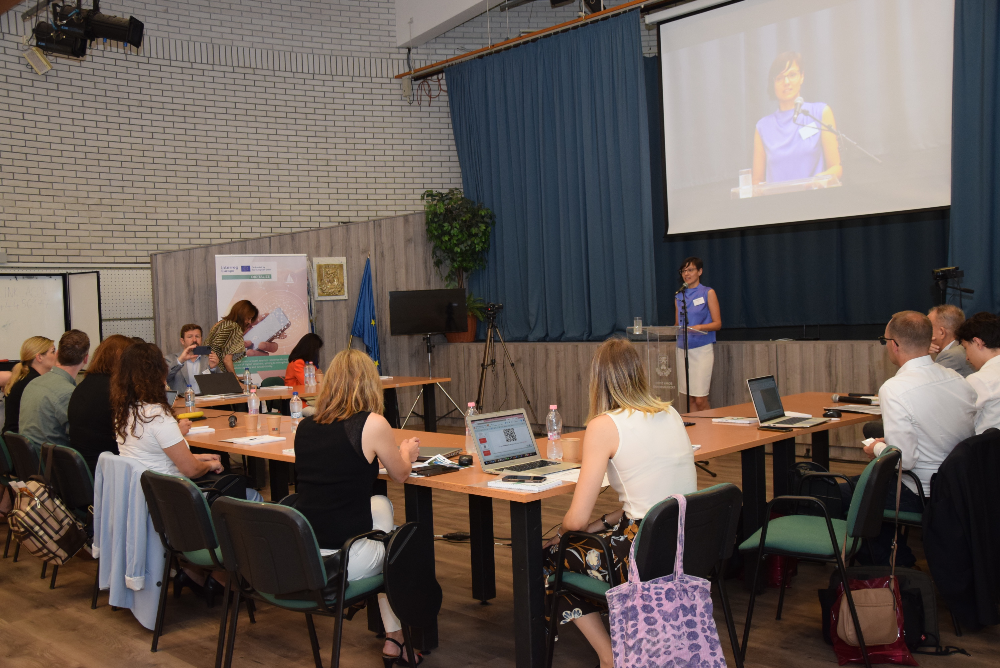
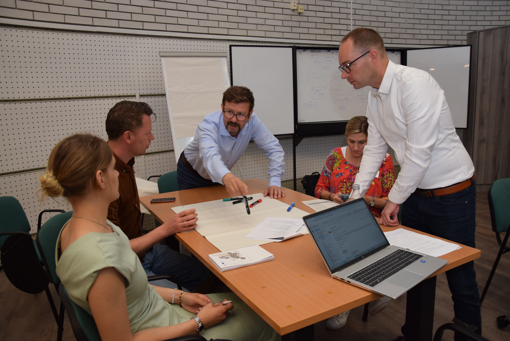

The DIGITALIZE Team is happy to announce the successful conclusion of its kick-off meeting, which united six European partners to collaboratively discuss the implementation of the DIGITALIZE project in Hévíz, Hungary!
On the first day, the meeting started with speeches by Gábor Papp, the Mayor of Hévíz, and a representative from the Ministry of Public Administration and Regional Development. The meeting continued with a presentation outlining the importance of the project. Following this, partners participated in an icebreaker exercise and a fun quiz competition about the partnering regions and their home cities. The team then presented and discussed the program specifics, detailing how project members can successfully collaborate through project reporting and the use of the Interreg Portal, while also outlining the financial rules and the internal reporting system. Following a short coffee break, the presentation continued with a detailed explanation of project indicators and monitoring, communication activities, and the to-do list for the first period. After a Q&A session, the partners had the opportunity to explore the sights of Hévíz and its unique thermal lake.
The second day began with an introduction to the Policy Learning platform, followed by a discussion among the group about the connection between the project's topics. The day continued with a workshop where partners were divided into groups to assess the current state of tourism and digitalization in their respective countries. The focus was on identifying main strengths, weaknesses, challenges, common struggles among partners, and sharing possible solutions to these problems. This was followed by another workshop where partners worked on Stakeholder Mapping based on URBACT methodology and Stakeholder Engagement. The meeting concluded with closing remarks from the organizers. Afterwards, the partners visited the neighboring city of Keszthely for a guided tour of the Festetics Castle.
